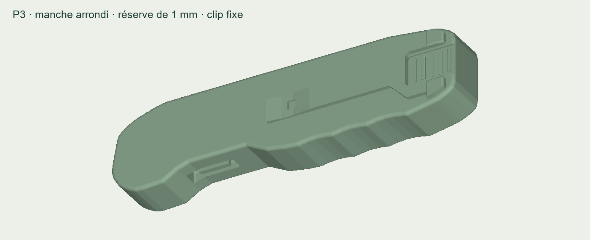
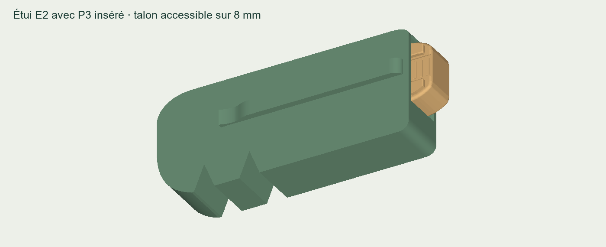

BIVOUAC
Le prototype plastique
Deux pièces à imprimer : le couteau complet P3 et son étui E2. Les nouvelles dimensions et les arêtes arrondies sont conservées.
Télécharger les 2 STL — ZIPÀ transmettre directement à l’imprimeur. Le ZIP contient les deux STL et une courte note d’impression.
01 · Couteau complet

Les deux faces sont réunies en un objet. Le relief de prise allume-feu est aussi présent au dos.
Environ 120 × 30 × 17,1 mm, clip comprise. Manche : 15,4 mm.
STL du couteau seul02 · Étui complet

Étui entier et creux, adapté au volume du couteau P3, avec accès pour le ressortir.
117 × 48,4 × 25,75 mm. Jeu nominal de passage : 0,6 mm par face.
STL de l’étui seulImprimer en millimètres à 100 %. Maquettes fixes pour essayer la prise en main et l’ajustement : aucun mécanisme mobile. L’étui n’a pas de rétention fonctionnelle.
STL fermés et tranchage vérifiés. Passage numérique contrôlé sur 455 positions sans collision. L’atelier vérifie les supports et l’ajustement sur les impressions réelles.